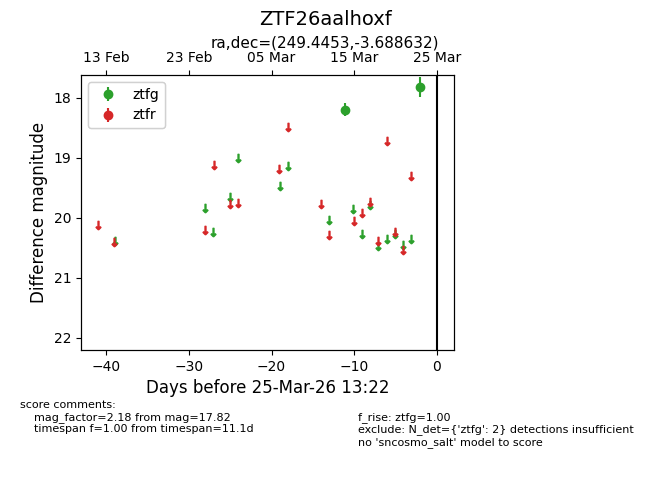
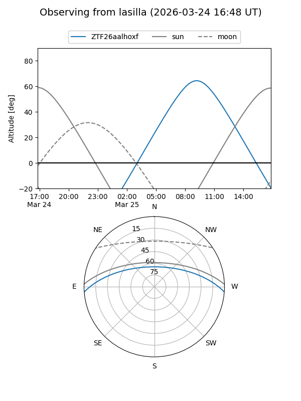
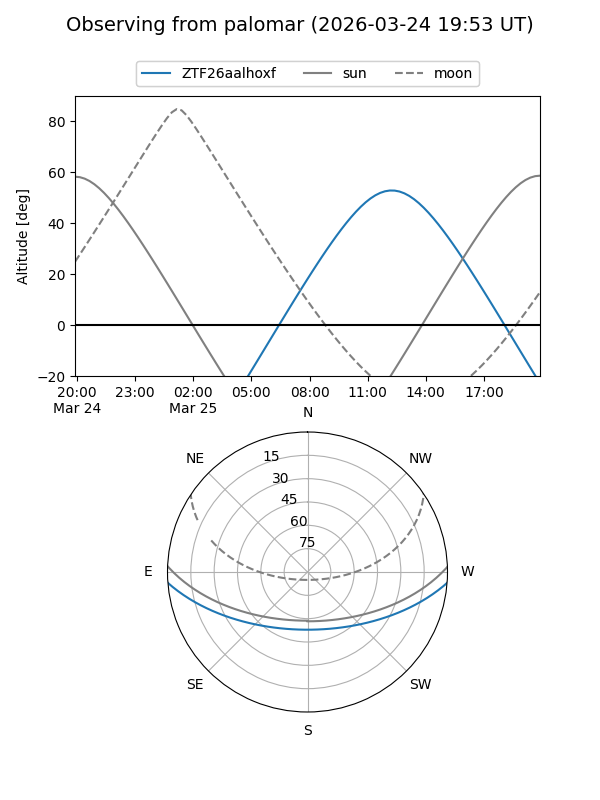

ZTF26aalhoxf
Target ZTF26aalhoxf at 2026-03-25 13:25
Aliases and brokers:
FINK: link
Lasair: link
ALeRCE: link
alt names
ZTF26aalhoxf (ztf,fink_ztf)
Coordinates:
equatorial (ra, dec) = 249.4453,-3.68863
equatorial (HMS+DMS) = 16:37:46.86,-03:41:19.07
galactic (l, b) = (12.6494,+27.37129)
Flags:
Photometry:
last ztfg=17.82
2 ztfg detections
Lightcurve

Visibility


Additional plots